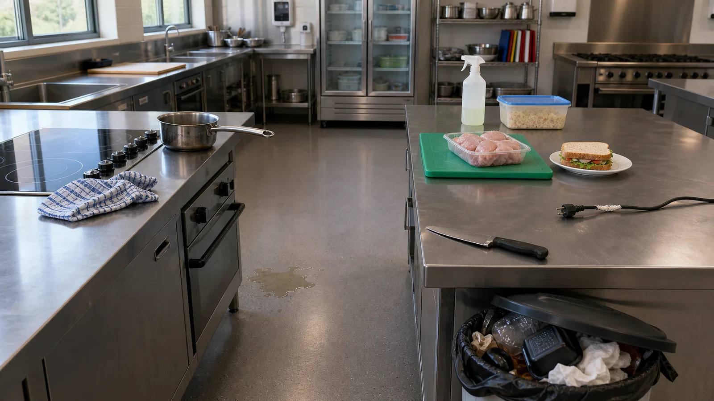

Success criteria
- Eight staged hazards identified
- Four harm pathways explained
- Responses stay within learner authority
- Report/escalation point is named
Task 1 · Activity 1
Identify observable kitchen hazards, explain the possible harm and choose a response within a learner's training and authority.
Supplied context
The pictured training kitchen has been deliberately staged with eight problems before a practical begins. No equipment is operating and no person is at risk. Treat it as a visual inspection, not permission to recreate the scene.
Interactive practice

Method
Use the scan path: floor, heat, electricity, chemicals, food separation, sharp tools, waste, movement.
Rank the four recorded hazards by urgency and justify why urgency is not the same as severity.
Save the evidence
The stimulus and core materials are supplied. Substitute a local authorised source only when it materially improves relevance and is safe to share.
Listen for use of evidence, accurate language, authority boundaries and the learner's explanation—not just the final selection.
Ask one group to defend a decision, one group to identify a likely error and one group to state the next source or person to confirm with.